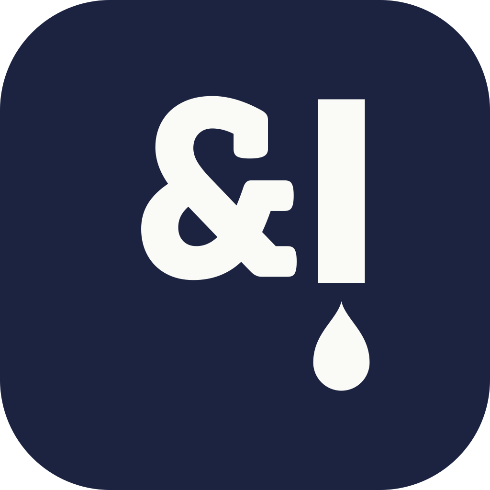

Wordsmith Launcher
One download for the whole desk.
The Wordsmith Launcher is planned as the front door to the suite: a small app that installs the Wordsmith apps you want, keeps them up to date, and opens your recent work from any of them.
Recent
An early sketch, not a design.
The idea
What the launcher is for.
Install what you need
Pick the apps you want. A screenwriter may only need Script; a novelist may want Manuscript and Book.
Stay up to date
One place to see and install updates, downloaded only from the project's official releases and checked before they run.
All your work
Recent screenplays, novels and books in one list, each opened in the right app.
Start something new
Choose a screenplay, a stage play, a novel or a book, and the right app opens with the right template.
Learn the tools
Guides and getting-started help for every app, in one place.
Same promises
No account, no tracking. Update checks can be turned off.
Have ideas for the launcher?
It hasn't been built yet, so now is the best time to shape it. Tell us what would help you.